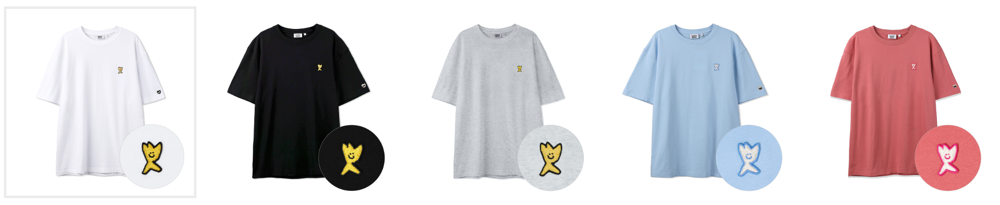
25SS ST01은 이월 판매가 큼
WA2502ST01은 57,000장 중 25년 12월 31일 35,200장 소진, 26년 7월 9일 46,500장 소진. 26년에만 약 11,300장이 추가 판매됐습니다.
`ST01, ST02.xlsx` Sheet1 리뷰와 `ST01,02,03 래퍼런스.xlsx` 이미지를 붙여 정리한 최종본입니다.

WA2502ST01은 57,000장 중 25년 12월 31일 35,200장 소진, 26년 7월 9일 46,500장 소진. 26년에만 약 11,300장이 추가 판매됐습니다.
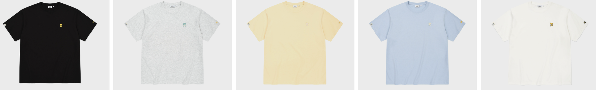
WA2602ST01은 36,000장 중 26년 7월 8일 기준 15,000장, 소진율 42%. 전년 이월품과 차이가 작아 신상품 전환력이 약했습니다.
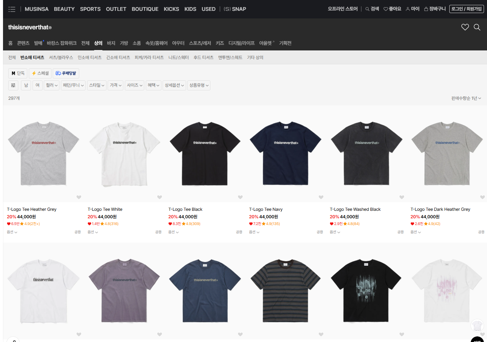
TINT와 Brownbreath 판매 흐름은 스몰로고보다 앞판 큰 로고가 강합니다. 스몰로고는 기본물·기능형 보조 역할로 보는 게 맞습니다.
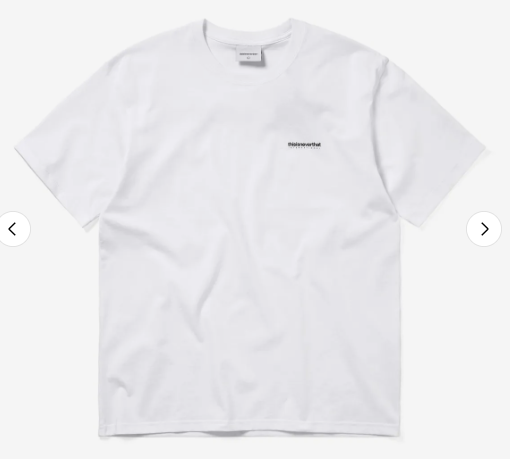
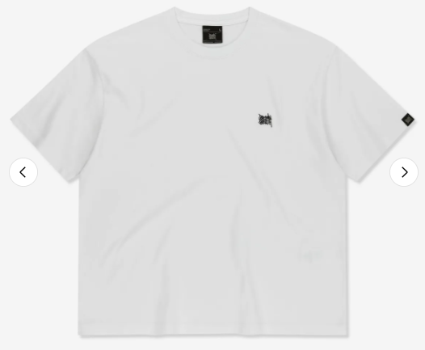
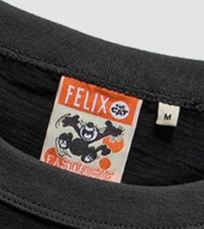
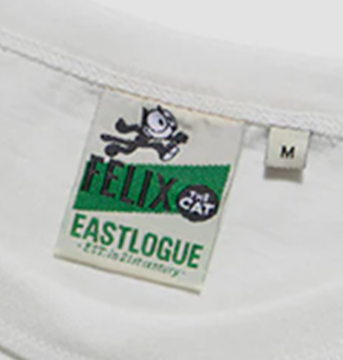
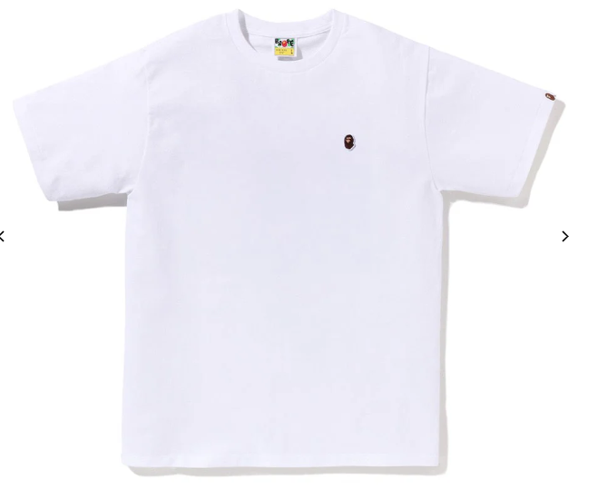
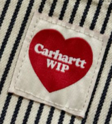
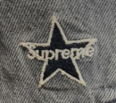
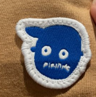
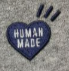
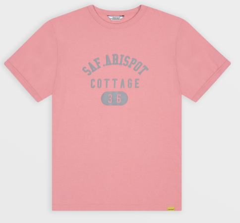
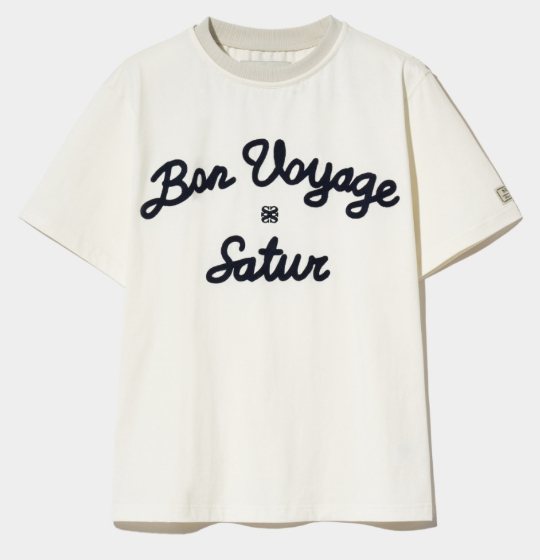
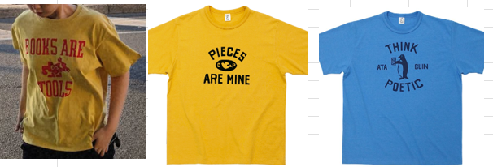
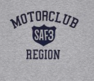